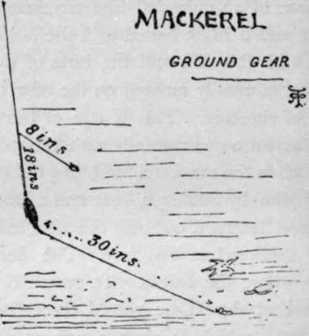

Mackerel. Continued
Description
This section is from the book "Sea Fishing", by John Bickerdyke. Also available from Amazon: Sea Fishing.
Mackerel. Continued
There are four methods of mackerel fishing. The largest catches are usually made by means of drift nets which are simply walls of netting, buoyed on one side, that drift with the tide during the night. The mackerel run against them, push their heads through the mesh, and are held captured. As the fish swim near the surface, the nets are not so deep as those used for herrings, and are often very much longer, eleven or twelve nets knotted together extending, perhaps, two and a half miles.
After mackerel have spawned in the spring they quickly recover their condition and, coming nearer the shore, take a bait eagerly. Then the net fishermen, in addition to capturing them in drift nets, use the seine, and surround the shoals which are seen breaking the surface inshore, chasing the britt or sile, as the young herrings and sprats are variously termed. At night I have known them to come on the sand in only a few inches of water, probably to feed on sand-eels. I have described at an earlier page how, wading on shore one night when my boat was stranded, I walked through a shoal of mackerel which made the sea beautiful by stirring up the phosphorescence. This phosphorescence, by the way, is sometimes called by the fishermen ' marfire' (i.e. sea-fire, from mare or mer), ' brimming,' and ' waterburn.' It is not favourable to drift-line fishing, as it no doubt discloses the position of the nets. On the other hand, it is helpful to the fishermen in search of the shoals, for as the fish swim near the surface their position is distinctly visible on the darkest night. I have heard of fishermen knocking a piece of wood against the outside planks of a boat, and when they noticed numbers of fish darting away, making a trail of light as they went, the nets would be shot.
Of line fishing there are three kinds : first, railing, whiffing, trailing, or plummeting, as it is variously called ; and much difference of opinion exists among fishermen as to the best gear to use for the purpose. I have illustrated and explained the different forms of tackle on pages 277 to 281. Though the ideas of fishermen vary considerably on the subject, there is little to choose between the various gear, except that some tow more steadily than others.
The bait of baits is undoubtedly the laske, or last, which is illustrated and explained on p. 107. Those who indulge much in mackerel fishing should provide themselves with dried gurnard or sole skin, to use as temporary laskes until a fish has been caught. A bait which is sometimes used with success when nothing better is forthcoming is a piece of tobacco pipe. Next the hook should always be two or three yards of gut, medium or stout according to the run of the fish, and the heavier and more clumsy the lead, the more distant from it should be the bait—in other words, the longer should be the snood. I need only add that for small mackerel the small hook shown on p. 261 should be used, while for larger fish the larger of the two will be better. These seem large hooks for so small fish, but the mackerel has a very big mouth, and the longer shank is a great advantage in enabling the fisherman to unhook the fish quickly.
The management of the boat is, of course, important. In the first place, it must be taken to the right fishing grounds; and, secondly, it should be sailed at the right speed, which can be effected by carefully trimming the sails. The best time of the day for fishing is from daybreak till about twelve o'clock. If the wind is very light and the water clear, fish can be caught on very fine tackle when they will not look at the ordinary gear used by the fishermen. Under such circumstances the speed will be low and a very light lead should be used. Whether such heavy leads as are commonly used are really required I very much doubt. One summer, at Tenby, I fished persistently with a lead of about three ounces, while the fishermen kept to their two-pounders. I caught about twenty-five per cent, more fish than they did and with considerably less labour. It can hardly be doubted that the very large leads towed through the water tend to scare the fish.
The two remaining methods of fishing are from a boat at anchor. Off Scarborough and other places a fair number of mackerel are caught by means of an unleaded line terminated with a single gut snooding and a hook baited with the laske. The bait simply drifts out with the tide, and the bites of the fish are easily felt. The boat is usually moored on the edge of a big eddy just off the run of the tide. This is one of those methods which have been carried on successfully with the rod, and very pretty fishing it is when the mackerel are biting freely. I rather improved on this plan by adding a float and a half-ounce lead to the tackle and letting it out with the tide, and have caught a good many mackerel in this way. The float enables one to see exactly where the bait is. To search the water thoroughly the pipe lead should be placed three feet from the hook, and the float, which is such a one as we should use in jack fishing (see p. 200), two feet above the pipe lead. For the running tackle there is nothing better than an undressed Nottingham silk pike line, such as I have recommended for fishing on the bottom.
About the end of summer mackerel begin to feed a good deal inshore, on the bottom, where they are caught on ordinary hand lines or with the paternoster tackle described on p. 238. A very good tackle for the purpose consists of the arrangement just described, minus the float, but the lead must be of sufficient weight to nearly hold the bottom. There may be two hooks, one at the end of the snood below the lead, the other attached to the line by means of an eight-inch piece of gut a foot above the lead. This fishing requires a good deal of skill, for the fish bite shyly and have to be struck at the slightest nibble. It is a great advantage to use a rod. Among good baits may be mentioned a very small sand-eel or half a large one, the hook being placed in at the mouth and the point brought out half an inch below the gills ; and mussels. On the Devonshire coast pilchard guts have been found an excelconsists of a boat-shape lead with wire through it, and six feet of fine snooding. A favourite bait consists of a strip of very fine pilchard-skin, one and a half inch long by a quarter-inch wide, and an almost equally thin strip of squid about the same size. The two are just caught on the hook and are worked up and down, to give them an appearance of life, just above the bottom. This fishing ends about the beginning of October.
Off the Channel Islands ground fishing for mackerel is lent bait, and a favourite plan is to cover the shank of the hook with a small piece of squid and put on the point of it either some pilchard guts or a small strip cut from the side of a pilchard. The lead should be lowered until bottom is felt, and raised about two yards. The professional gear for this method of fishing on the coast of Devon carried on a good deal at night. I have not used ground bait for these fish, but have not the slightest doubt it would conduce to a good catch. In America the mackerel fishermen have mills in which they grind up herrings for the purpose. Having attracted a large number of mackerel, they lower a bright metal fish which is well armed with hooks and then jig it about; the mackerel rush to it and are foul-hooked.
Tackle For Fishing For Mackerel On Or Near The Bottom.
When sport is not obtained either by whiffing or fishing near the bottom, various depths should be tried, for mackerel exhibit great susceptibility to changes of temperature, both as to their migrations and the depths at which they feed.
This concludes nearly all I think need be said about this admirable fish. When the mackerel are biting very shyly and the hook is being constantly robbed, I would suggest—and it is a mere suggestion, for I have not tried it—using Stewart tackle made up with large hooks, the bait being a strip of pilchard and a strip of squid cut worm-shape caught on and twisted round them. There is a two-hook tackle of this kind on p. 117. Three hooks might be better for this purpose. I have used this tackle for several kinds of bottom-feeding freshwater fish, other than trout and salmon, and found it answer extremely well, except in the case of tench, which mumble the bait and soon discover any hooks which are not well covered. Fly fishing for mackerel is referred to on p. 149.
Sometimes the plummeter will capture a fish in which the usual mackerel markings are replaced by spots such as are found on the back of a loch trout. This is merely a variety, Scomber punctatus, or spotted mackerel. There is also Scomber colias, the coly or Spanish mackerel, the latter name being the least desirable, as it is also applied to the tunny, and confusion engendered. This fish is not common in British waters. It may be instantly known by the eye, which is twice or three times the size of a common mackerel's.
The Horse Mackerel Or Scad
The Horse Mackerel Or Scad is, according to naturalists, . not a mackerel at all, but a member of the Carangidce family, and has none of the usual markings on its back. A glance at its back fins will suffice to distinguish it from the common mackerel. In Scomber scomber the two dorsal fins are set wide apart, but in the scad they almost meet, and close to its anal fin are two spinous defensive weapons which the angler should avoid with care. A striking peculiarity of this fish is a lateral line, which crosses a number of scale plates so formed that they give the fish the appearance of having an external backbone on each side. These fish, which are common off Cornwall and are found all round our coasts, are fished for in just the same way as the mackerel, and take all the usual mackerel baits. They feed best at and after dusk.
Continue to:
- prev: Mackerel
- Table of Contents
- next: The Garfish
Tags
fishing, hooks, bait, fishermen, spanish mackerel, mackerel fishing